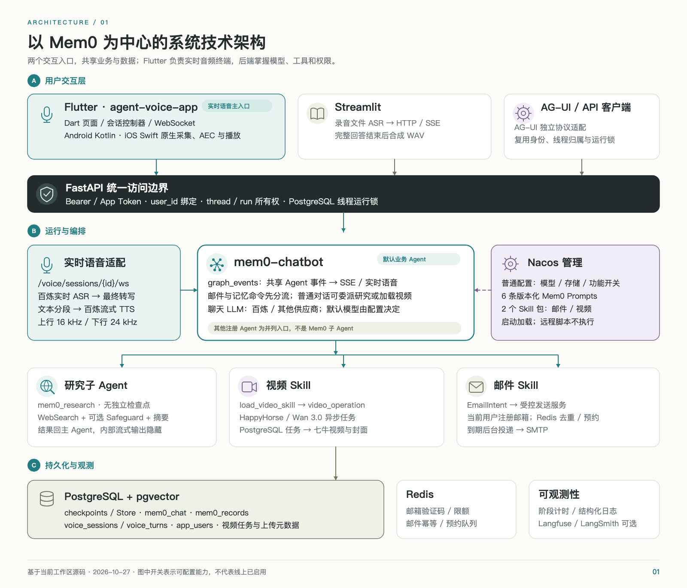
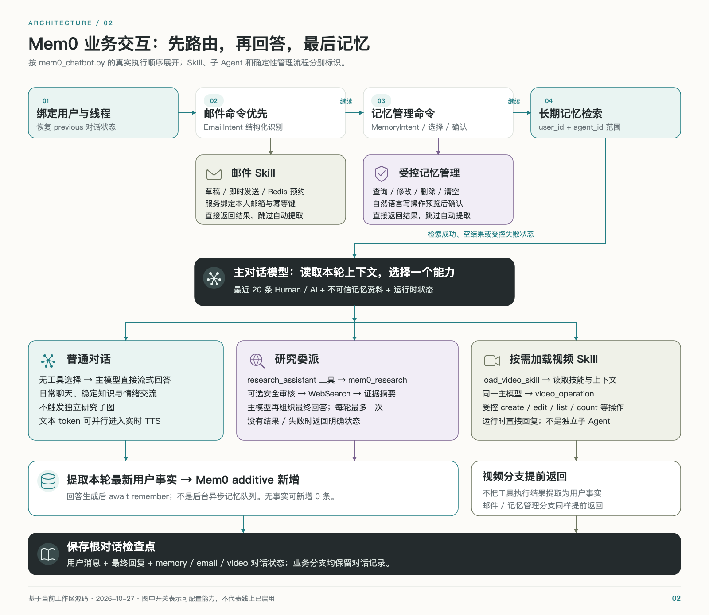
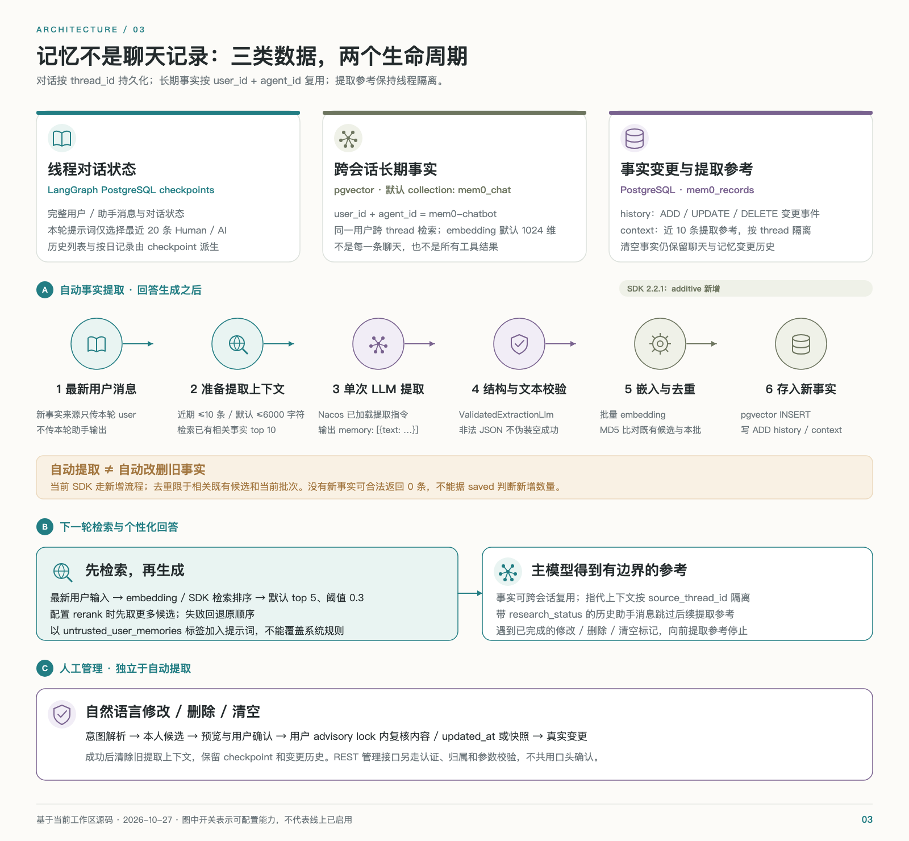
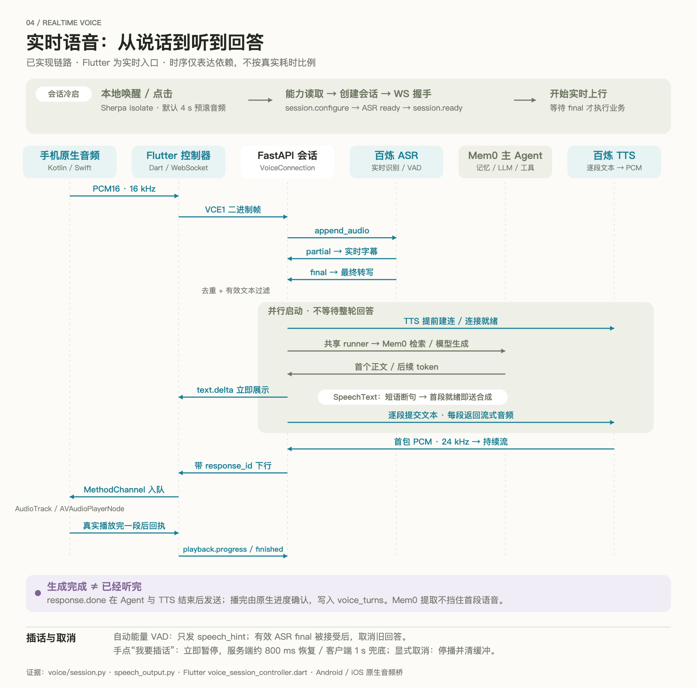
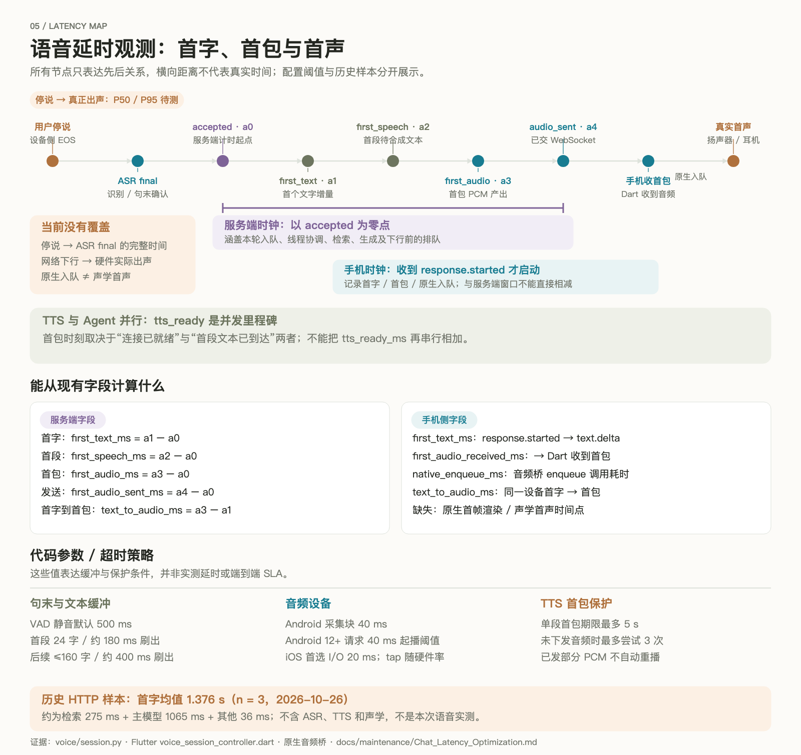

ARCHITECTURE REVIEW · 2026-10-27
以 Mem0 为中心，
看懂对话、记忆与语音。
跨后端、Flutter、Android 与 iOS 的实现核验。五张架构与流程图，三篇主题文档及源码证据索引。
5 张矢量架构图实时语音专项基于当前源码
延时口径：现有历史 HTTP 首字均值 1.376 秒（n=3）不包含 ASR / TTS / 声学播放。本次没有产生新的真实语音测试数据，停说到真实首声 P50 / P95 待测。
SOURCE VERIFIED / 01
项目技术架构与业务交互总览
核验日期：2026-10-27。适用对象：项目负责人、后端、Flutter 与测试工程师。本文描述源码中的现状，接口按当前工作区核验；配置默认值不代表线上已启用。
本系统的业务中心是 mem0-chatbot：Flutter 提供连续语音和个人资料库，FastAPI 执行认证、语音调度与 LangGraph，PostgreSQL 保存对话、长期记忆和播放状态，Nacos 管理配置、提示词与技能。日常聊天、联网研究、邮件、记忆管理和视频任务共用主对话入口，但执行和持久化路径不同。
阅读导航
文档 | 回答的问题 |
|---|
本文 | 有哪些项目、组件和调用关系？主要业务如何串起来？ |
Mem0 智能体、技能与记忆 | 哪些是真正的子智能体？事实如何提取、召回、修改？对话如何保存？ |
语音全链路与延时 | 从用户说话到 ASR、首字、TTS 和实际播放，哪里串行、哪里并发、延时如何计算？ |
源码核验索引 | 跨项目证据、函数、测试和本次验证边界在哪里？ |
离线浏览可打开 完整图文图册（agent-service-toolkit/docs/architecture/Architecture_Atlas.html），在一页切换四部分并放大SVG。图片、正文与可编辑图源随本目录保存。
飞书文档已通过CLI同步并回读检查：技术架构总览、Mem0与记忆专篇、语音与延时专篇、源码核验索引。
项目边界
项目 | 核验版本 | 职责与关系 |
|---|
agent-service-toolkit | ec78ed3 + 当前工作区 | Python 3.12–3.14、FastAPI、LangGraph、Mem0、Streamlit；本系统业务后端 |
agent-voice-app | c43f095 + 当前工作区 | 独立 Flutter 客户端，包含 Dart 控制器、Android Kotlin 与 iOS Swift 音频桥；直接调用本后端 |
user-management | d7f6222 | 独立 FastAPI、SQLAlchemy、MySQL 用户/角色 CRUD 和模拟视频分析服务；核对入口、接口、持久化与任务实现后，未发现与本系统直接集成 |
user-management-web | 83d79b9 | Vue 3、Vite、Element Plus；通过 /api 代理调用上项服务的 /api/v1/users，不承担实时语音 |
相邻目录中的 RAG、LangChain 与课程示例没有进入本次已核实的应用调用链。没有因为目录相邻而将它们画成依赖。主应用的账户实际存于 PostgreSQL app_users，不是相邻项目的 MySQL t_user；两套用户 ID 也没有已实现的映射。
现有工作区对 docs/Mem0_Memory.md 和延时报告已有修改。本次以当前内容作为文档证据，新增本目录交付，不覆盖原有修改，也不读取实际用户对话、运行日志或环境密钥。
总技术架构
项目总技术架构

点击打开可编辑矢量原图 · SVG / PNG 随包附带
图源：可编辑 SVG（agent-service-toolkit/docs/architecture/assets/01-system-architecture.svg）。图中启用条件仍受 Settings、Nacos 和服务启动校验约束。
架构按五层理解：手机负责声音的采集与真实播放；传输层通过 HTTP 与双向 WebSocket 交换业务和音频；FastAPI 绑定身份、线程并调度执行；Mem0 主智能体选择对话或业务能力；数据和外部服务分别保存事实、执行模型或实际操作。Nacos 是启动时控制面，不是每个音频帧都会访问的中转站。
层 | 实现 | 关键边界 |
|---|
Flutter 终端 | VoiceHomePage、VoiceSessionController、原生 AudioBridge | 手机持有用户令牌；本地唤醒、AEC、停播与播放确认在终端执行 |
Streamlit 入口 | streamlit_app.py、VoiceManager、AgentClient | 录音文件 HTTP ASR，SSE 展示回答，结束后整段 TTS；不走移动实时语音 WebSocket |
API 与安全 | FastAPI、access.py、voice.py | Bearer、JWT 用户绑定、线程归属、运行锁；管理服务凭据与 App 用户令牌有不同权限 |
共享执行 | _handle_input、graph_events | SSE 与实时语音共用 Agent 事件层；AG-UI 使用官方独立适配器，共用身份与线程协调 |
主对话 | mem0_chatbot、answer_with_research | 主模型维持会话；研究子图、邮件、视频和记忆管理各有受控边界 |
持久化 | PostgreSQL、pgvector、Redis、七牛 | 对话与记忆分开；Redis 负责验证码、限额和邮件预约，不保存 LangGraph 根对话 |
模型与工具 | 百炼 ASR/LLM/TTS、DDGS、SMTP、HappyHorse/Wan | 模型、搜索、发送邮件和视频生成是不同调用，失败与完成含义分别处理 |
配置与观测 | Nacos、模型/语音计时、可选 Langfuse/LangSmith | 模板和技能在启动时加载；启用追踪不等于已具备完整声学延时统计 |
证据：src/service/service.py::lifespan、src/service/agent_runner.py::graph_events、src/service/agui.py::_event_stream、src/core/settings.py；Flutter lib/features/voice_session/ 和 lib/core/audio/。
从登录到连续对话
- 用户在 Flutter 输入邮箱；App 调用 /auth/email/code，服务用 Redis 管理验证码和频率，通过 SMTP 发送验证码。
- /auth/email/verify 校验后查询或创建 app_users，签发带 sub/exp/iat/jti 的 HS256 App 令牌。Android Keystore / iOS Keychain 保存客户端会话。
- App 查询 /voice/capabilities，读取协议、音色、默认智能体、唤醒和端侧 VAD 参数。当前返回的默认智能体是 mem0-chatbot。
- 用户点击开始，或端侧 Sherpa ONNX 检测到唤醒词后，App 创建语音会话、连接 WebSocket、发送 session.configure。
- 服务端 ASR 连接就绪后发送 session.ready，终端开始持续上传 PCM。中间转写用于字幕，最终有效转写才触发一轮 Agent。
- Agent 的主回答文字流进入 UI 和分段 TTS；首包音频可以早于全文生成和记忆提取完成。客户端按响应 ID 播放并确认实际播完的分段。
- 结束语音关闭传输与音频资源，线程仍保留；下一次可通过历史页继续同一线程。新线程可以召回同一用户的长期记忆。
重要默认差异：/voice/capabilities.default_agent 是 mem0-chatbot，但 VoiceSessionInput.agent_id 的 schema 默认仍为 chatbot。Flutter 明确提交所选 agent，所以正常 App 路径使用选定值；自行调用创建接口时应显式传 agent_id，不能假定省略字段与能力接口一致。
Mem0 主业务路由
Mem0 业务交互流程

点击打开可编辑矢量原图 · SVG / PNG 随包附带
图源：可编辑 SVG（agent-service-toolkit/docs/architecture/assets/02-mem0-business-flow.svg）。完整机制见 Mem0 专篇。
入口先处理邮件，再处理记忆管理。未被拦截时才检索长期事实并调用主模型；主模型可以直接回复、选择研究工具，或者按需加载视频技能。邮件、记忆管理、带 video_status 的视频分支提前返回；日常聊天和研究回答随后进入长期事实提取。
场景 | 主要交互 | 用户看到的结果 | 后续工作 |
|---|
日常聊天 | 召回个人记忆 → 主模型 | 文字增量、语音分段 | 提取最新用户消息中的事实，保存根对话 |
联网查证 | 主模型委派 → WebSearch → 子图摘要 → 主模型最终回答 | 主助手的回答与真实来源 | 研究内部内容隐藏；不把网页当作用户事实 |
记忆管理 | 意图 → 候选匹配 → 选择/预览/确认 → 更新 | 列表、数量、历史或变更结果 | 修改后清理提取参考，保留聊天和变更历史 |
发邮件 | 邮件线索 → EmailIntent → 当前用户邮箱 → Redis/SMTP | 草稿追问、已预约、已提交或结果不确定 | 预约队列由后台按时处理；已提交不支持口头撤回 |
视频生成/查询 | 加载技能 → 同一主模型 video_operation → VideoService | 任务、列表、数量卡片及可播报摘要 | 异步生成、状态查询、七牛转存与实际封面生成 |
回看对话 | 日期/线程列表 → 根检查点还原 | 历史消息和视频卡片 | 对话查询不等于长期记忆检索 |
注册表中其余 research-assistant、rag-assistant、两个 supervisor、GitHub MCP 等是可选择的兄弟智能体，不是 Mem0 自动调用的子智能体。两个 supervisor 的示例搜索函数返回固定文本，也不能画成 Mem0 的真实联网研究路径。
数据如何分工
数据 | 存储/范围 | 用途及生命周期 |
|---|
完整线程对话 | LangGraph PostgreSQL checkpoints；线程与 Agent/用户元数据 | 恢复历史；Mem0 functional state 存在 __previous__；当前模型仅取最近 20 条 Human/AI |
长期用户事实 | 默认 mem0_chat pgvector collection；user_id + agent_id | 跨线程召回；source_thread_id 是来源元数据，不是检索隔离条件 |
实体关联 | SDK 按需建立的实体 collection | 为 SDK 检索提供实体增强；不是独立业务知识图谱服务 |
提取参考/记忆历史 | mem0_records.kind=context/history | context 按线程区分并保留最多 10 条有效记录；history 记录 ADD/UPDATE/DELETE |
语音会话与播放 | voice_sessions、voice_turns | 输入去重、生成文本、分段、已播放采样数、取消状态；未看到原始 PCM 落库路径 |
所有权与运行 | app_thread_owners、app_runs | 线程归属和反馈 run 授权 |
登录账户 | app_users | 邮箱身份、昵称、头像及审计字段 |
邮件临时任务 | Redis | 验证码、请求去重、发送额度、预约队列及到期清理 |
视频/文件 | PostgreSQL 业务记录 + 七牛对象 | 业务状态与文件实体分离；生成成功和转存成功分别表达 |
通用 Store / RAG | AsyncPostgresStore / rag_documents | 为其他能力提供存储；Mem0 自己的长期事实不通过通用 Store 写入 |
“最近 30 天聊天记录”是查询窗口，不是数据只保留 30 天的删除策略。代码没有据此自动删除旧检查点。删除长期记忆也不会清空根对话或变更历史；历史中仍有原始事实，所以不能承诺用户信息已彻底擦除。
部署与实际启用条件
Compose 包含 PostgreSQL（带 pgvector）、Redis、Agent 服务和 Streamlit。Nacos、SMTP、百炼及七牛是配置或外部依赖；可选 Langfuse/LangSmith 不应画成必经业务节点。容器服务默认 8080、Streamlit 8501；Linux Nginx 模板的 API 上游是 8000，App 的打包地址又可覆盖默认值，实际地址以部署配置为准。
启动顺序为 Nacos 普通配置 → 六条 Prompt → 已启用 Skill → PostgreSQL saver/store → 注册图配置 → Mem0、账户、邮件、语音、视频和文件生命周期 → 服务发现注册。涉及具体子服务的初始化次序以 lifespan 嵌套为准；不允许用 SQLite 或内存替代失败的生产持久化。
六条 Mem0 Prompt 在远端统一校验后安装，没有本地正文回退。即便 MEM0_ENABLED=false，mem0-chatbot 的聊天角色仍依赖 Prompt；关闭长期记忆不等于关闭模板依赖。Skill ZIP 只读取受限的 SKILL.md，不会执行下载脚本。
当前最值得关注的边界
发现 | 对业务/验收的影响 |
|---|
暂无停说到实际首声的闭环测量 | 不能把服务端首音频指标当作用户听到声音的时间；详见语音专篇 |
Mem0 单工作线程、最多 8 个 pending，按用户加 advisory lock | 避免阻塞事件循环，但繁忙用户或慢提取会影响后续召回排队 |
记忆提取被等待，流式播报可以先行 | 首字、首声和 response.done 是不同体验指标 |
语音 capability 与创建 schema 的默认 Agent 不同 | 自定义客户端应始终显式提交 agent |
会话数限制的注释/错误文案比 SQL 范围宽 | active_sessions() 只统计 created/connected，而初建状态为 ready；“每用户最多两个未过期会话”不能作为所有状态下的严格保证 |
手机原生播放队列未看到时长硬上限 | 后端有界队列不能证明端侧永不积压；弱网和慢播放需独立观察 |
旧规划仍写默认 research-assistant | 新图和本文遵循当前注册表；历史计划不作为运行现状 |
这些是本次源码审阅结论，不表示本次执行了生产压测或故障修复。未访问线上配置、真实用户数据或付费模型；测试文件作为设计与边界的交叉证据，验证结果见 源码核验索引。
SOURCE VERIFIED / 02
Mem0 智能体、技能与记忆实现
核验日期：2026-10-27。适用版本：后端 ec78ed3 + 当前工作区，固定依赖 mem0ai==2.2.1。本文说明现有执行和数据契约；六条远端 Prompt 的实时正文未读取，不能据此保证任意自然语言输入的提取质量。
mem0-chatbot 是主对话智能体，Mem0 SDK 是它使用的记忆组件。两者职责不同：主对话负责选择能力、回答和保存线程，SDK 负责用户事实的提取、检索与存储。当前 Mem0 路径真正委派的研究子图只有一个；邮件和视频是技能工作流，记忆意图识别是结构化模型步骤。
能力、技能、子智能体的准确关系
Mem0 业务路由
点击打开可编辑矢量原图 · SVG / PNG 随包附带
图源：可编辑 SVG（agent-service-toolkit/docs/architecture/assets/02-mem0-business-flow.svg）。每一轮按邮件 → 记忆命令 → 召回 → 主模型分流的顺序执行，没有所有能力并发抢答的总 supervisor。
能力 | 运行对象 | 加载与触发 | 是独立子智能体吗 |
|---|
日常陪聊 | mem0_chatbot + 当前选择的聊天模型 | 默认入口；get_model() 复用客户端 | 主智能体本身 |
联网研究 | 工具 research_assistant → task mem0_research → research_subagent | 默认允许研究工具；模型按问题决定，每轮最多一次 | 是；无独立持久 checkpointer 的 LangGraph 子图 |
邮件 | send-current-user-email Skill + handle_email_command + EmailSkillService | 启动从 Nacos 加载；存在待补充草稿或“邮件 + 发送”线索时识别 EmailIntent | 否；结构化识别加确定性业务执行 |
视频 | manage-user-videos Skill + VideoSkillSession + VideoService | 启动下载；主模型先见技能描述，选中 load_video_skill 后才得到完整参考与操作 schema | 否；仍由同一主模型调用 video_operation |
记忆管理 | MemoryIntent、MemoryMatch、MemoryDialogue | 有线索、待确认状态或明确确认时进入；识别步骤带 skip_stream | 否；受控管理流程 |
事实提取 | Mem0 SDK + 独立提取 LLM/Embedding | 普通/研究回答后调用 remember() | 否；记忆组件调用，不是新的会话智能体 |
仓库内 .agents/skills、开发者工具使用的飞书技能，以及其他维护者技能不属于应用运行时 Skill。应用当前从 Nacos 加载的这两种 Skill 名称由 src/core/skills.py 固定；ZIP 最多 1 MiB、最多 30 项，只接受一个受限的 SKILL.md，校验路径与名称，不运行远端代码。
六条默认Prompt引用如下，启动时按发布标签读取并整体校验，正文不在本地回退。修改远端发布内容后需重启应用，当前没有逐轮热拉取。
默认Prompt Key | 作用 |
|---|
mem0-chat-system | 聊天角色、任务边界与表达规则 |
mem0-memory-status | 运行时记忆状态，且仅允许一次 {status} 占位 |
mem0-memory-intent | 管理意图提取为MemoryIntent |
mem0-memory-match | 候选匹配为MemoryMatch |
mem0-fact-extraction-instructions | SDK提取输入中的Custom Instructions |
mem0-fact-extraction-system | 替换SDK实际提取请求的system消息 |
一轮主对话的顺序
- 校验 configurable.user_id/thread_id，恢复 previous.messages 与记忆、邮件、视频对话状态。身份来自服务端绑定，不能让工具参数覆盖。
- 获取聊天模型；voice_enable_thinking 优先于请求 enable_thinking，再使用 CHAT_LLM_ENABLE_THINKING 默认值。百炼聊天默认显式关闭思考，其他模型支持范围不同。
- 执行邮件拦截。有结果就保存最终用户/助手消息及草稿状态，然后返回，不检索或自动提取长期事实。
- 执行记忆管理拦截。需要时解析意图、定位候选、等待确认或执行管理；有结果就保存状态并提前返回。
- 用当前最新用户输入召回长期事实，构造主模型提示：固定系统规则 → 最近对话 → 运行状态 → 标为 untrusted_user_memories 的参考 → 当前输入。
- 主模型直接回复，或选择一次研究委派，或走视频“加载 → 操作”流程。带 video_status 的返回提前保存，不做自动提取。
- 普通/研究回答生成后，await memory.remember([最新用户消息], user_id, thread_id, context=近期参考)。流式文字可能早已到达客户端；记忆提取不是放入后台队列后立刻返回。
- 写入 memory_status，以 entrypoint.final(value=本轮输出, save=完整线程状态) 返回，由 PostgreSQL checkpointer 持久化。
证据：src/agents/mem0_chatbot.py::mem0_chatbot、_chat_prompt、_extraction_context；src/agents/research_delegation.py::answer_with_research。
研究子智能体
研究 task 只收到一个最长 2000 字符的独立公开查询和必要运行配置，不接收整份记忆与聊天历史。它用预置 WebSearch tool call 直接进入搜索，再让摘要模型整理证据，省去子图内部再次判断是否搜索的模型轮次。
子图路径为 Safeguard → WebSearch → 有证据才摘要。这个受限子图不包含计算器或天气工具；独立注册的 research-assistant 才提供搜索、计算器和可选天气。不能把两者的工具清单混在一起。
约束 | 代码行为 |
|---|
调用次数 | 主模型响应必须恰好选择一次已知研究工具；不执行多个并行研究调用 |
搜索资源 | DDGS 工作线程最多 4 个未完成请求，默认 5 秒预算；超时后的同步工作继续占用名额直到退出 |
总预算 | 研究子任务默认 20 秒，主模型研究最终回答另限 15 秒；不包括之前的检索和首次主模型选择 |
来源 | 从 WebSearch ToolMessage.artifact 提取，最多四条；摘要不凭空增加来源 |
安全审核 | 配置 Groq Key 才调用 Safeguard；未配置时跳过。受限研究路由只有 SAFE 才搜索 |
输出隔离 | task/namespace mem0_research、skip_stream 被共享事件层隐藏，UI 和 TTS只接收根回答 |
失败 | empty/timeout/unavailable/blocked/invalid 返回受控提示；不追加编造的联网结论 |
持久化 | 根历史保存用户与最终回答及来源 metadata；子图没有独立持续会话检查点 |
一次成功研究通常包含三次回答模型调用：主模型选工具、子图摘要、主模型最终回答。若启用 Groq，另加安全模型调用。失败可能提前结束；用户最终看到的首个可播报正文不一定是主模型最早返回的工具片段。
research_status 标记的历史助手回复被后续提取参考排除。本轮仍只把用户原始输入交给提取器，防止网页/摘要被当作用户事实；公开查询不得夹带隐私主要依靠提示词规则，并不是确定性的全内容敏感信息过滤器。
邮件和视频为什么单独分支
邮件是高约束操作：只有当前已认证的注册用户可发送，收件人由 app_users 查询；模型不能指定其他地址、CC/BCC、附件或用记忆补正文。草稿有效十分钟；未指定时间立即发送，明确未来时间只允许未来 24 小时内预约。Redis 原子脚本实现请求去重和每天十次额度，后台每秒扫描到期任务。scheduled 表示预约成功，sent 表示 SMTP 已接受，unknown 表示结果不确定，不能自动重发。
视频采用按需加载：主模型先选 load_video_skill，得到技能正文、最近最多 12 条/12000 字符的对话参考和视频草稿，再调用同一主模型生成 video_operation。后端校验身份、授权、参数和幂等键后执行；结果直接组织为回复，无额外最终改写模型。生成、编辑是异步任务，查询、列表、数量依赖真实业务库，不按对话猜数量。
视频通过 agent.custom 返回 video.task/video.list/video.count，同时在最终回复 metadata 中保留数据，Flutter 在实时消息和历史消息下恢复视频卡片。视频成片和封面由后端转存七牛，只有 SUCCEEDED + STORED 且相关元数据齐全才表示完整可用；取消语音或草稿不会撤回已提交供应商任务。
对话、事实和历史是三种数据
记忆生命周期与数据分层

点击打开可编辑矢量原图 · SVG / PNG 随包附带
图源：可编辑 SVG（agent-service-toolkit/docs/architecture/assets/03-memory-lifecycle.svg）。完整消息供恢复对话，长期事实供跨线程个性化，mem0_records 的历史/参考服务于提取和审计，三者不能互相替代。
数据层 | 写入位置 | 读取方式 | 范围 |
|---|
完整对话 | checkpointer 中 __previous__.messages | messages_from_checkpoint()、/history、/threads | 同一线程；服务端同时校验用户和 Agent |
模型对话窗口 | _chat_prompt() 临时构造 | 仅 Human/AI 的最近 20 条，完整保留每条内容 | 不包含被裁掉的更早历史，但不删库 |
长期事实 | SDK pgvector collection，默认 mem0_chat | memory.search()，按用户与 mem0-chatbot 过滤 | 跨线程；来源 thread 只作 metadata |
提取参考 | mem0_records.kind=context / 当前显式 context | 最多十条、默认总字符预算 6000；显式 context 优先 | 按用户、Agent、source thread 隔离 |
事实变更历史 | mem0_records.kind=history | /memories/{id}/history | 按 memory UUID，校验活记录或历史 owner |
语音播放 | voice_turns.data | 分段文本、采样数、played_samples | 用于区分生成过与确认听过，不保存原始音频 |
MEM0_CHAT_CONTEXT_TOKENS 是兼容性遗留配置，当前不再限制聊天输入。20 条窗口与长期事实默认 6000 字符预算是不同限制；长记忆不会驱逐最近聊天窗口。完整对话可能持续增长，代码没有自动摘要或无限期历史压缩机制。
事实究竟如何提取
当前桥接保留 SDK 2.2.1 的实际算法，以 PostgreSQL PostgresHistory 替换其默认历史初始化，避免创建 SQLite。
- 主智能体仅提供最新一条用户消息作为新事实来源。前文 Human/AI 只用于指代消解，例如助手问“你住在哪里”、用户回答“上海”；这段是合成示例。
- _extraction_context() 从较新历史向前取最多十条/默认 6000 字符，跳过研究助手回复，遇到成功修改、删除或清空记忆的边界就停止，避免把旧提取参考重新带回。
- SDK 为本轮消息生成查询 embedding，按 user_id + agent_id 取最多十条已有事实，并把 UUID 映射为短整数引用。
- 用一次提取模型调用处理 Existing Memories、New Messages、Observation Date、Last k Messages 和 Custom Instructions。提取系统消息及项目规则来自 Nacos，而不是本地固定文本。
- ValidatedExtractionLlm 校验 JSON：必须有 memory 列表，每条 text 为非空字符串；合法空列表表示没有事实，格式错误抛出异常，不能伪装成空提取成功。
- 对事实批量 embedding；失败时 SDK 尝试逐条。对已召回事实与当前批次做文本 MD5 去重；这不是全用户库唯一约束，也不是语义重复绝对消除。
- 新建 UUID，写入向量、正文、用户/Agent、来源线程、hash 和时间；写入 ADD 历史，并按可用情况维护 SDK 实体关联；最后保存本轮提取参考。
自动提取采用 additive 新增，不会自动执行旧事实 UPDATE/DELETE。 用户表达偏好变化可能成为新的事实文本；显式纠正和删除走下面的受控流程。实体关联的内部更新不等于用户事实自动更新。不能照搬通用 Mem0 示意图，声称当前提取器会自动覆盖、合并或删除全部冲突事实。
算法证据：项目 src/memory/mem0_sdk.py；安装的 mem0/memory/main.py::_add_to_vector_store、_search_vector_store。实体 collection 按需创建，由 SDK 管理，不是单独部署的图数据库。
提取仍属于概率性模型能力。测试中的合成场景覆盖指代、明确不记住、歧义、引用与敏感文本边界，但使用替身模型返回预设结构；它们验证数据边界和协议，不证明真实模型对所有输入都能正确提取。本次没有读取远端提示词正文或调用付费模型复测。
事实如何召回
查询先经过 Mem0 SDK：embedding → 过滤用户/Agent的语义候选 → PostgreSQL 全文检索及 SDK 排序/实体增强 → 阈值 → 返回结果。pgvector Provider 支持关键词搜索，SDK 用其结果构造 BM25 风格的归一化分数；其 SQL 本身使用 ts_rank_cd，不应称为原生 BM25 索引。
应用默认取 MEM0_TOP_K=5、MEM0_THRESHOLD=0.3。启用外部 reranker 时先请求最多 max(top_k, MEM0_RERANK_CANDIDATES) 条，默认候选 20，再重排取前五；SDK内部还会过取候选，不能把20说成所有数据库检索的硬上限。重排失败回退原 SDK 顺序。返回文本按 MEM0_MAX_CONTEXT_CHARS 截入默认 6000 字符预算。
召回事实作为有标签的 HumanMessage 参考 {"untrusted_user_memories": [...]} 插入，不能覆盖系统规则。没有搜索结果不等于提取没有成功；saved 也只表示调用成功返回，可能实际新增零条。
修改、删除与清空
语音和文字命令共用 MemoryDialogue：意图识别 → 候选检索/结构化匹配 → 多候选先选择 → 预览具体操作 → 五分钟内明确确认 → 加用户锁复核 → 执行。选中对象含 UUID、原文与 updated_at；清空使用全量 snapshot revision，确认时变化则返回 conflict，要求重新选择。
自然语言确认是项目工作流，不是模型获得任意数据库权限。MemoryIntent.other_user、UUID/候选索引和用户所有权都须验证。每次实际管理操作后清理该用户/Agent 的提取参考；根对话和变更历史继续存在。
REST 管理接口是另一条路径：Flutter 详情页编辑/删除、列表清空使用本地表单和确认 UI，调用 /memories；服务端仍校验身份与 ownership，但这些接口不要求再走一次 MemoryDialogue 语音预览，也不支持语音同口径的 snapshot/updated_at 确认前置条件。不能把语音层确认画成所有 PUT/DELETE 的公共服务端必经节点。
接口 | 用途与边界 |
|---|
GET /memories | 用户范围列表，limit 1–100，UUID cursor；Flutter 默认每页20 |
GET /memories/{id} | 详情；不存在或他人记录返回404 |
PUT /memories/{id} | 1–6000 字符替换文本；SDK重新 embedding并记录 UPDATE |
DELETE /memories/{id} | 删除事实向量并记录 DELETE；保留变更历史 |
DELETE /memories | 清空当前用户的 Mem0 事实；不删除聊天与历史 |
GET /memories/{id}/history | 变更历史分页，整数 cursor；删除后仍可通过历史 owner 校验 |
Mem0 Provider 的事实删除是实际移除 collection 记录；mem0_records 的参考清理使用逻辑删除。这是现有第三方与第一方持久化语义，不应把新业务表的统一逻辑删除规范反推成当前所有数据都如此。
对话记录如何保存与展示
根状态保存整个消息历史；messages_from_checkpoint() 同时兼容 StateGraph 的 messages 和 functional API 的 __previous__，否则只能看到本轮输出，漏掉历史。
Flutter 的个人资料库提供聊天记录、长期记忆入口。/threads 从初始 checkpoint 元数据枚举线程，再读取最新 tip 取标题和更新时间；当前扫描上限会使非常旧的线程不一定出现在列表。/history 按线程还原完整消息，Flutter 经 ChatItem 恢复正文、memory status 和视频引用。
/chat-records 按最近30个 UTC 日历日聚合根检查点；某一天详情用当天最新快照减去此前共享消息前缀，返回当天新增消息，而不是把每天都展示为完整重复线程。这个日期不是设备当地午夜，跨时区用户应理解这一边界。
语音中断时，delivery_context() 用 voice_turns 的播放确认生成一条 voice_delivery 说明：只有完整分段且 played_samples >= samples 才算确认听过。被取消但未写入的用户输入按稳定消息 ID 补入。后续模型不应假设用户已经听完所有生成文字；这类说明属于播放状态，不是用户认同。
超时、并发与完成含义
Mem0Service 用单个 ThreadPoolExecutor(max_workers=1) 隔离同步 SDK，默认最多8个未完成调用，20秒应用等待预算。按 collection/用户/Agent 加 PostgreSQL session advisory lock，跨进程串行同一用户操作；获取锁后提交事务，避免把模型网络调用放在长数据库事务内。
等待超时或取消不能杀掉已经运行的同步 SDK worker，future仍保留容量直到真正结束。因此管理超时可能稍后完成，客户端应先刷新核对；生成取消也不等于已开始的记忆或业务操作必然回滚。向量与变更历史经过不同调用写入，不应承诺跨全部步骤的单事务原子提交。
情况 | 面向调用方的行为 |
|---|
未启用 Mem0 | 普通聊天可继续，memory_status=disabled，管理接口503 |
检索失败 | 无召回事实继续回答；之后写入成功可为 saved_search_failed |
提取失败 | 保留回答并标记 write_failed，不能宣称事实已记住 |
模型回答失败 | 不进入本轮自动记忆提取 |
管理繁忙/等待超时 | HTTP503/504或语音受控提示；核对状态后再决定重试 |
确认期间事实发生变化 | conflict；不继续执行旧预览 |
进一步证据和测试位置见 源码核验索引。语音时序、首字与首音频如何受这些步骤影响，见 语音专篇。
SOURCE VERIFIED / 03
语音全链路、交互状态与延时分析
核验日期：2026-10-27。适用版本：后端 ec78ed3、Flutter c43f095 加各自当前工作区，移动协议 v1。阅读目标：明确用户从说话到识别、首字符、合成和播放的实际路径，并知道每个延时数字测到了哪里。
当前实时链路是 Flutter 原生采集 → WebSocket → 百炼 ASR → Mem0/LangGraph → 分段 TTS → WebSocket → 手机原生播放。Agent 与 TTS 连接并发准备，拿到短语即可合成，无需等全文或记忆提取结束。但目前还没有“用户停说到扬声器实际首声”的完整测量，所以端到端 P50/P95 仍待测。
一图看完整语音交互
实时语音全链路时序

点击打开可编辑矢量原图 · SVG / PNG 随包附带
图源：可编辑 SVG（agent-service-toolkit/docs/architecture/assets/04-voice-sequence.svg）。图的距离不代表实际耗时；ASR、模型和 TTS 都是独立调用，当前没有使用一个端到端语音大模型代替 Agent。
两个前端是两套语音路径
环节 | Flutter 实时入口 | Streamlit 录音入口 |
|---|
用户输入 | 原生持续 PCM、离线唤醒、点击或文字 | st.chat_input(accept_audio=True) 提交完整录音 |
ASR 调用方 | Python 后端异步实时 Provider | Streamlit Python 进程直接用同步 HTTP Provider |
ASR 提交 | PCM 随说随传；partial字幕，final启动Agent | 完整文件Base64，stream=False；默认 qwen3-asr-flash |
Agent 入口 | VoiceConnection.generate() 内部调用共享 runner | AgentClient.astream() → /{agent}/stream SSE |
回复显示 | text.delta 更新 Flutter 消息 | draw_messages() 更新占位文本 |
TTS 起点 | 独立任务预连接；首个短语就能合成 | SSE读取结束后，对最后完整AI消息调用 render_message() |
音频返回 | 流式 PCM16/24k，下行二进制帧 | 整段HTTP合成，Base64或URL下载完整WAV，再显示播放器 |
播放确认 | 原生分段完成 → progress/finished → 后端保存 | 保存 last_audio 供 rerun 展示，没有相同的播放进度协议 |
插话 | 自动提示、手动暂停、显式取消、响应失效 | 未接入实时语音会话的上述插话协议 |
Streamlit TTS当前跳过少于3字符的文本，超过600字符截断；默认 qwen3-tts-flash，音色 Cherry。完整录音ASR最多7MiB，HTTP请求超时120秒。这些约束只属于文件/整段Provider，不能套到Flutter的分段实时链路。
证据：src/streamlit_app.py::main、src/voice/manager.py、providers/alibaba_stt.py、providers/alibaba_tts.py。Streamlit文字虽然流式，声音仍等待整轮流结束，其中可能包含记忆提取耗时。
建立会话：冷启动与持续会话分开看
Flutter首页根据能力接口选定Agent和音色。点击连接与唤醒最终都进入 _connect()：读取能力 → 校验协议和音色 → 麦克风权限 → POST /voice/sessions → 带Authorization的WebSocket → session.configure → 等待 session.ready → 原生音频切入conversation模式 → 开放实时上传。
session.ready 在上游ASR会话可用后才发，服务端首条控制事件必须在10秒内为 session.configure；客户端连接和等待ready分别有12秒超时。这些是错误保护，不是正常连接所需时间。
前台唤醒使用Sherpa ONNX 1.13.8，在独立Dart isolate中运行本地关键词模型；待机采集持续送给KWS并维护默认4秒预滚环形缓冲。命中“小美小美”后，复制预滚和建连期间音频，申明 pre_roll_samples，ready后补传，随后转为实时上传。4秒是最大保留窗口，不是每轮额外等待4秒。
后端默认用ASR二次确认唤醒词，允许跨final累计“小美”前缀；成功后剥离唤醒词并提交其后的有效命令。只有唤醒词没有任务时播放配置的欢迎语，不调用主模型、不形成普通用户对话。唤醒被拒绝或确认超时则关闭会话，终端回到待机。
初次打开还可能发生令牌恢复、能力获取、KWS模型素材准备与权限交互；这些不应混入已连接状态下每轮响应统计。当前只明确实现前台唤醒；不能据此声称锁屏、后台、蓝牙和来电矩阵全部验收。
手机麦克风到ASR
终端原生音频
平台 | 采集与处理 | 播放与完成回执 |
|---|
Android | AudioRecord，会话用 VOICE_COMMUNICATION，待机用 VOICE_RECOGNITION；16kHz/单声道/PCM16，1280字节读取块约40ms；按系统可用性启用AEC和降噪 | AudioTrack，24kHz/单声道流式输出；非阻塞写入，暂停或满缓冲保留余下PCM；通过真实playback head达到marker确认完整分段 |
iOS | AVAudioSession.playAndRecord/voiceChat、Voice Processing；AVAudioConverter把设备输入变为16kHz PCM16；首选I/O buffer20ms，tap1920帧的时长随设备实际采样率变化 | AVAudioPlayerNode.scheduleBuffer(...dataPlayedBack)；统计pending buffer，真实播完后发segment/response完成 |
Android会话选择扬声器时保留合适的已有通信路由，停止时恢复原音频模式与路由。iOS允许Bluetooth HFP；支持API不代表所有设备AEC、延迟和音质都一致。audio.metrics 上报真实启用标志及RMS/峰值/削波汇总，不上报原始音频内容。
传输与帧
Dart的 NativeAudioBridge 通过 agent_voice/microphone EventChannel接收PCM，用 encodeInputAudioFrame() 封装，VoiceSocket发送。二进制帧是45字节大端头加小端PCM，魔数 VCE1，包含kind、connection UUID、response UUID、segment index、sequence；上行response为零UUID、segment为0，序号从0逐帧递增。
每帧payload最多6400字节，音频格式上行16kHz、下行24kHz、PCM16单声道。6400字节是上限，不是客户端固定分块大小；后端下行当前按不超过4096字节切片。服务端检查连接、序号、偶数字节和实时上传节奏，按申明预滚允许相应额外样本。
receiver() 放入有界 audio_in，upload()独立向ASR写入；recognize()同时读上游事件。默认server VAD要持续收到包括静音的音频才能判断结束。手动模式用 input.commit，该事件在server_vad模式会被拒绝。Flutter当前常规创建固定选择server_vad；后端协议也支持manual。
上游两种协议
voice.catalog 根据模型族或显式配置选择 realtime/inference。默认Settings是 qwen3-asr-flash-realtime 与 qwen3-tts-flash-realtime；部署可由Nacos覆盖，未读取线上值，不能据默认值断言当前账户实际用哪一个型号。
realtime路径发送 session.update 并等 session.updated；inference路径通过 run-task/task-started/continue-task/finish-task 翻译为统一业务事件。模型和音色目录绑定校验，换TTS模型后过期音色不能直接复用。当前支持多种适配模型族不等于每个供应商型号都已真机验证。
ASR final到首字符
- speech_started/stopped 转成 input.started/ended；partial转成字幕。partial不触发推测执行，所以不会因为识别修订重复操作工具。
- final去重后过滤空白、标点和少数语气词；无效输入不建turn，不取消当前回答。正常句子保留标点。
- 唤醒确认和前缀清理后进入 submit()，检查待确认业务、输入长度、持久去重和队列容量，再使上一回答失效。
- 创建VoiceTurn，在 accepted 标记时间，然后保存turn、放入容量2的输入队列，发送 input.accepted。这就是后端语音指标的零点；它不包含之前的ASR和去重查询。
- worker.execute()并发启动 speak()和 generate()。前者建立TTS连接并等文本，后者申请线程guard、构造输入、查checkpoint、处理业务确认并发送 response.started。
- 共享 graph_events()运行Mem0。普通路径为邮件/记忆命令快速门控 → Mem0检索 → 主模型；需要模型识别的管理/邮件或工具分支会额外耗时。
- 根正文token触发 first_text，追加 generated_text、发送 text.delta，再入TTS文本队列。chatbot/mem0-chatbot支持该流式模式；其他Agent默认等待根最终消息再播报。
研究、记忆意图等内部步骤带 skip_stream 或特定namespace，不把规划JSON和子图正文播给用户。主模型工具调用不等于首个用户可见正文；研究和视频分支应独立统计，不能套普通聊天均值。
首字符到TTS、首包与实际出声
SpeechText不等全文：首段遇可用句末边界、达到最多24字符，或待缓冲约180ms时尝试刷出；后续最多160字符、约400ms刷出。代码围栏、链接、Markdown标记和纯标点会被清洗；所以“首字”可能还不是可朗读内容。
这些阈值约束文本聚合，并不是严格的180ms首声保证。TTS连通性、任务启动、积压、队列背压和事件循环调度都可能增加时间。speak()先建连，再消费文本，文本可能已积压；断句计时从该消费过程的pending状态开始，不必与第一个模型token同时开始。
first_speech 标在首个可朗读短语从SpeechText产出时，随后才发送 audio.segment.started 并调用供应商合成，不能称为上游已经接受文本。tts_ready 在进入synthesizer上下文后标记：realtime已确认session；inference此时仅WebSocket连接就绪，每段的 run-task/task-started还在 synthesize() 内。
每段连续接收PCM，emit_audio()第一次处理PCM时标 first_audio；经过outgoing优先级队列并成功 send_bytes()后标 first_audio_sent。后者只是交给WebSocket，不是手机已收，也不是扬声器已出声。
客户端解码并过滤旧connection/response，通过MethodChannel入队原生播放器。Dart收到并完成首包enqueue后才进入speaking状态；Android 12+请求40ms的AudioTrack起播采样量，但这不是声学实测延时，系统、硬件路由、耳机和蓝牙还会影响播放。
播放完成、记忆完成和轮次完成
事件/状态 | 已完成什么 | 不能推出什么 |
|---|
text.delta | 根回答有可展示文本 | TTS已合成或用户已听见 |
audio.segment.done | 后端这一段的PCM发送生产结束 | 手机已完整播放此段 |
response.done | Agent执行和TTS任务结束并已保存turn | 播放设备已排空，也不等于邮件入箱或视频生成完成 |
playback.progress | 终端确认完整分段的played samples | 任意半段内容都完整听到 |
playback.finished | 原生端确认本次输出全部播放完成 | 真实环境中用户注意力/听觉一定接收到内容 |
Mem0在主回答之后等待事实提取。实时TTS已经获得正文时可以先播放，提取可能延后response.done；若提取失败也不丢掉已生成回答。语音turn的 status/execution_status/audio_status分别描述总状态、执行状态和合成状态，TTS失败时仍保留文字与已收到音频。
后端保存VoiceTurn的文本、分段、采样和播放确认，不保存原始PCM。response.done.latency_ms与连接内timings用于诊断，当前 VoiceTurn schema没有专用latency字段，因此不能假定 /voice/.../turns天然能返回完整历史延时统计。
插话与取消：三个动作的区别
触发 | 手机立即行为 | 后端判定 | 恢复/后续 |
|---|
自动能量VAD | 默认连续3个采集帧超过-42dBFS，发 speech_hint(pausePlayback:false)，不立即暂停 | ASR开始只发input.started；有效final被submit接受后才取消旧回答 | 未确认时约800ms发playback.resume；自动提示本来没有停播 |
点击“我要插话” | speechHint()立即暂停原生播放，保留缓冲 | 仍等待有效输入，不仅凭本地能量取消业务 | 服务端约800ms恢复提示，手机另有1秒兜底，前提是响应仍有效 |
点击停止/显式取消 | invalidResponses登记、原生cancel停播清缓冲，发response.cancel | 废弃旧音频/文本并标记interrupted；可取消的聊天任务被取消 | 等待下一轮；已提交外部操作不会假装回滚 |
Android原生取消会flush AudioTrack并重置写入/播放计数；iOS停止player并清理对应pending标记。服务端有urgent控制事件与invalid集合，客户端按connection_id、response_id继续丢弃迟到帧，因为已经进入TCP的旧包不能被撤回。
中断后下一轮 delivery_context()仅引用完整且确认播完的分段，避免模型把已生成但未听到的内容当成共同上下文。复杂Agent可能继续完成不可取消的业务；研究超时和Mem0同步worker也有各自的取消边界。
延时观测地图
首字、首包与首声的测量边界

点击打开可编辑矢量原图 · SVG / PNG 随包附带
图源：可编辑 SVG（agent-service-toolkit/docs/architecture/assets/05-voice-latency.svg）。目前覆盖中间窗口，首尾仍有缺口。所有数字须先声明时间起点和终点。
服务端已经有的指标
以 a0=submit()标记accepted，a1=首正文、a2=首段可朗读文本、a3=首PCM进入下行生产、a4=首PCM成功交给WS：
字段 | 公式/定义 | 包含与限制 |
|---|
first_text_ms | 1000 × (a1-a0) | 含turn持久化、输入排队、线程协调、主Agent准备与首正文；不含ASR |
tts_ready_ms | accepted到TTS连接上下文就绪 | 与Agent并发，不能再串行相加；协议ready含义有差异 |
first_speech_ms | 1000 × (a2-a0) | 已有首个清洗短语，尚不等于供应商已收到提交 |
first_audio_ms | 1000 × (a3-a0) | 首PCM到达后端下行生产；未含发送队列和手机侧 |
first_audio_sent_ms | 1000 × (a4-a0) | 包含outgoing等待与首包WS send；不含手机播放 |
text_to_audio_ms | 1000 × (a3-a1) | 综合文本聚合、连接等待和合成等；不是纯TTS模型推理时间 |
first_speech_ms-first_text_ms可近似观察首字到首个可朗读短语，first_audio_ms-first_speech_ms可观察首段准备后到PCM的等待，first_audio_sent_ms-first_audio_ms观察下行生产/队列/send；它们是实现边界差值，不是上游独立模型服务的纯耗时。
字段在 response.done被sender填入，缺失阶段不返回。若用户提前取消或连接断开，不能只用“完成响应”算延时分布，否则会漏掉慢请求和失败；欢迎语也应单列，否则会错误拉低模型首字统计。
Flutter已经有的指标
Flutter的Stopwatch从收到 response.started开始，比服务端accepted更晚；两端同名 first_text_ms起点不同。response.done中的后端字段保存为 server_*，不能混合相减。
字段 | 起点 → 终点 |
|---|
first_text_ms | 手机收到response.started → 收到text.delta |
first_audio_received_ms | 同一手机起点 → Dart处理到首包音频 |
native_enqueue_ms | 处理到首包 → MethodChannel enqueue返回；不含完整硬件排队 |
text_to_audio_ms | 同一手机首字 → 首包被处理；受消息asyncMap处理队列影响 |
原生已有“分段播完”回执，但没有首个渲染采样/声学首声时间戳。当前调试输出和状态map也不是持久的P50/P95监控系统。需要保留response_id后收集事件，不能把当前页面一轮map当作历史数据库。
能写出的全链路公式
用户停说 → 首字符
= 停说到ASR final/submit接受 + 服务端 first_text_ms
+ 首文字下行与客户端呈现等待
用户停说 → 实际首声
= 停说到ASR final/submit接受 + 服务端 first_audio_sent_ms
+ 音频下行 + Dart/原生队列 + 硬件/路由实际起播
用户开始说话 → 实际首声
= 本次说话时长 + 上式；冷启动时还受会话就绪与预滚补传影响
这些项必须来自同一次请求的相同边界。服务端各阶段是相对accepted的累计时间，不能把first_text、first_speech、first_audio再彼此相加。TTS建连并行，首包取决于连接和文本两个分支何时同时可用。
已有数字：实测报告与配置分开展示
证据类别 | 数值 | 可以说明什么 |
|---|
2026-10-26仓库已有HTTP合成请求报告，n=3 | 首正文1.432、1.337、1.359秒；均值1.376秒 | 当次完整HTTP首字，不含ASR/TTS/手机；本次没有复测 |
同一报告的分解 | 召回约275ms、主模型首正文约1065ms、其余约36ms | 当次样本的近似归因，非语音全链路与长期P95 |
代码默认 | VAD静音500ms | 服务端句末参数，非每轮ASR固定耗时；可由Nacos覆盖 |
代码缓冲 | 首段24字符/约180ms；后续160字符/约400ms | 文本刷出策略，非整体首声保证 |
设备请求参数 | Android采集块40ms；Android12+起播阈值请求40ms；iOS首选I/O20ms | 各平台音频参数，不能机械串成真实声学延时 |
超时保护 | 单段首PCM最多5秒或更短upstream预算；最多尝试3次 | 失败/重试策略；不是正常合成目标，也不能推出整轮一定15秒结束 |
端到端实测 | 停说→首声P50/P95：未获得 | 缺同轮端侧EOS、首渲染/声学观测和可比较采样 |
已有报告：主对话首Token与缓存优化验证（agent-service-toolkit/docs/maintenance/Chat_Latency_Optimization.md）。它是当前工作区已有材料，本次只引用其说明，不读取真实用户或日志重新推导，也不把HTTP样本拼接为虚构的语音总延时。
TTS最多重试3次仅适用于尚未下发PCM的分段；已下发部分音频不自动重播。InvalidParameter/InvalidApiKey/AccessDenied不重试。建连、任务启动、各段持续合成与重试仍有其他预算，因此5秒不是整轮超时。
如何补齐端到端延时验收
以下是测量方案，尚未实现或执行，不能与上文已实现指标混淆。
- 在同一手机单调时钟记录本地有效话音结束、首文字收到、首PCM收到、native enqueue、首次渲染与播放完成。原生首渲染也不是最终声学证据；用外部录音/回环进一步确认扬声器首声。
- 后端保留response_id关联accepted、ASR final、安全的阶段耗时、模型调用和工具类型。设备EOS与ASR final不要跨设备绝对时间直接相减；优先同端观测或经过明确校时的trace方案。
- 分组采样：冷启/已连接、普通/有记忆/研究/邮件/视频、realtime/inference、Android/iOS、扬声器/有线/蓝牙、网络RTT与抖动。欢迎语单独统计。
- 每组建议至少100次合成请求，报告有效样本、超时、取消、失败比例与P50/P95；样本不足不输出稳定P95结论。不要自动产生真实邮件或视频副作用。
- 用现有指标先定位：首字慢看检索/主模型/工具，首字到首包慢看分段/连接/供应商，服务端首包快而手机出声慢看网络/队列/AudioTrack或AVAudioPlayerNode。
当前最有价值的补齐点是终端EOS和首渲染/声学采样，以及按响应持久化指标。继续减小文本缓冲或直接换模型之前，应先得到这些分段证据；保持Mem0个性化、工具可靠性和插话语义也属于验收条件。
资源、重连与已知范围
连接内sender、receiver、upload、recognize、timer、worker并发；TTS与Agent另外有独立任务。后端音频/文本队列有界并保留背压，客户端的原生播放队列未看到时长硬上限，因此慢设备仍需监测积压，不能只证明后端有界就认为所有端都无积压。
session默认30分钟、空闲120秒、每进程连接容量默认8；用户会话数有保护逻辑，但SQL实际只统计特定状态，详见总览中的边界。JWT到期也会终止会话。重连创建新的语音传输状态并可复用thread，不自动重放旧音频或重新提交已发生业务。
本次完成源码与协议核验、图稿渲染和文档校验；没有连接手机、调用付费模型、发送邮件、生成视频或运行生产压测。相关替身测试已有并发首音、背压、重试、插话、记忆和研究链路断言，其位置见 源码核验索引。
SOURCE VERIFIED / 04
架构文档源码核验索引
核验日期：2026-10-27。本文记录本次跨项目阅读范围与可复核入口。源码优先于历史计划；表格中的测试是已阅读的交叉证据，不代表本次重新执行了全部测试。
项目和证据层级
项目 | 基线 | 阅读范围 | 纳入结论 |
|---|
agent-service-toolkit | ec78ed3 + 当前工作区 | 主Agent、注册、研究、全部Mem0适配层、记忆管理、技能、服务/协议/配置、Streamlit、实时音频、部署及相关测试 | 主系统 |
agent-voice-app | c43f095 + 当前工作区 | App入口、登录/配置、语音首页相关交互、完整会话控制器、协议/API、KWS、Android/iOS原生音频、记忆和历史页、视频卡片及相关测试 | 实时客户端 |
user-management | d7f6222 | 项目约定、FastAPI入口、配置/数据库结构、用户API/模型、视频上报/worker | 独立系统；没有发现主系统调用关系 |
user-management-web | 83d79b9 | 包依赖、Vue入口/用户页面结构、Axios API、Vite代理 | 只连接上项CRUD服务；没有实时语音 |
第一级证据是当前实现和固定依赖源码；第二级是schema与相关测试；第三级是仓库文档的设计和历史验证记录。没有访问实际Nacos配置、Prompt正文、环境密钥、真实用户数据或运行日志。
后端：主入口与Mem0
文件 | 关键对象 | 支撑结论 |
|---|
注册表（agent-service-toolkit/src/agents/agents.py） | DEFAULT_AGENT、STREAMING_CHAT_AGENTS、agents | 默认mem0-chatbot；兄弟图不等于子图 |
Mem0主Agent（agent-service-toolkit/src/agents/mem0_chatbot.py） | mem0_chatbot、_chat_prompt、_extraction_context | 路由优先级、20条窗口、提取来源与提前返回 |
研究委派（agent-service-toolkit/src/agents/research_delegation.py） | answer_with_research、run_research | 一次研究、独立预算、主模型最终回答 |
研究图（agent-service-toolkit/src/agents/research_assistant.py） | research_subagent、research_assistant | 受限子图与独立Agent的工具不同 |
搜索适配（agent-service-toolkit/src/agents/web_search.py） | BoundedWebSearch | 同步请求的超时与容量 |
安全检查（agent-service-toolkit/src/agents/safeguard.py） | Safeguard、SafetyAssessment | 有无Groq配置的实际分支 |
记忆命令（agent-service-toolkit/src/agents/memory_commands.py） | _handle、_confirm、handle_memory_command | 意图、候选、预览、五分钟确认、并发冲突 |
Mem0服务（agent-service-toolkit/src/memory/mem0_service.py） | Mem0Service、mem0_lifespan | 单线程、有界pending、召回/记忆/管理及资源释放 |
SDK桥接（agent-service-toolkit/src/memory/mem0_sdk.py） | build_memory、ValidatedExtractionLlm | PostgreSQL历史注入、提取系统消息、JSON校验 |
历史适配（agent-service-toolkit/src/memory/mem0_history.py） | PostgresHistory | owner、context线程范围、advisory lock、history |
重排（agent-service-toolkit/src/memory/mem0_rerank.py） | Mem0Reranker | 候选校验、重排与失败处理 |
PostgreSQL（agent-service-toolkit/src/memory/postgres.py） | get_postgres_saver/store | 必需持久化和连接池 |
配置（agent-service-toolkit/src/core/settings.py） | Settings | 功能开关、默认值与Prompt属性 |
模型工厂（agent-service-toolkit/src/core/llm.py） | get_model | 模型缓存和thinking参数适用范围 |
提示布局（agent-service-toolkit/src/core/chat_context.py） | prepare_chat_prompt | 固定规则、运行上下文、可选显式缓存 |
模型计时（agent-service-toolkit/src/core/model_metrics.py） | ModelTiming、invoke_chat_model | 工具首输出、正文首输出和usage计时不同 |
Prompt契约（agent-service-toolkit/src/schema/prompts.py） | Mem0Prompts、Mem0PromptKeys | 六个远端模板与status占位校验 |
技能和外围能力
文件 | 核验用途 |
|---|
邮件命令（agent-service-toolkit/src/agents/email_commands.py） | 正则门控、EmailIntent、草稿、当前用户限制与状态回复 |
邮件运行时（agent-service-toolkit/src/skills/email.py） | Redis原子去重/额度、预约队列、SMTP状态 |
邮件HTTP与生命周期（agent-service-toolkit/src/service/email_skill.py） | 需要真实App用户、认证服务与加密SMTP |
邮件Skill参考（agent-service-toolkit/skills/send-current-user-email/SKILL.md） | 受控邮件工作流与失败语义 |
视频按需加载（agent-service-toolkit/src/skills/video_chat.py） | 同一主模型load/operation两阶段，无独立分类Agent |
视频Skill执行（agent-service-toolkit/src/skills/video.py） | 参数/身份/幂等、草稿、列表、数量和custom事件 |
视频Skill参考（agent-service-toolkit/skills/manage-user-videos/SKILL.md） | 生成/查询/编辑能力与素材限制 |
视频服务（agent-service-toolkit/src/video/service.py） | 异步任务、状态刷新与300秒后台同步周期 |
视频Provider（agent-service-toolkit/src/video/providers.py） | 百炼异步HTTP、七牛转存/封面 |
视频接口（agent-service-toolkit/src/service/video.py） | 用户令牌、任务CRUD和生命周期 |
Skill解析（agent-service-toolkit/src/core/skills.py） | ZIP限制、名称/路径校验、只读SKILL.md |
Nacos集成（agent-service-toolkit/src/service/nacos.py） | 普通配置、六Prompt、Skill下载、服务发现与关闭 |
邮箱登录（agent-service-toolkit/src/service/email_auth.py） | app_users、验证码、SMTP、JWT签发 |
用户schema（agent-service-toolkit/src/service/sql/create_app_users.sql） | PostgreSQL账户，与相邻MySQL项目区分 |
文件服务（agent-service-toolkit/src/service/file_uploads.py） | 上传元数据、七牛对象与用户绑定 |
同时核对 chatbot.py、两个 langgraph_supervisor_*、rag_assistant.py、knowledge_base_agent.py、GitHub MCP图及 src/rag/：这些是扩展/兄弟能力，未把它们错误连入Mem0的每轮必经链路。
API、聊天和语音后端
文件 | 关键对象 | 支撑结论 |
|---|
服务入口（agent-service-toolkit/src/service/service.py） | lifespan、_handle_input、message_generator、history | 初始化、用户配置保留键、SSE与历史查询 |
共享运行层（agent-service-toolkit/src/service/agent_runner.py） | graph_events、delivery_context、thread_guard | 子图隐藏、事件、已听内容与线程协调 |
访问控制（agent-service-toolkit/src/service/access.py） | authenticate、bind_user、authorize_thread | 用户/管理身份和线程/run所有权 |
AG-UI（agent-service-toolkit/src/service/agui.py） | _event_stream | 官方独立适配，非graph_events的SSE序列化 |
线程列表（agent-service-toolkit/src/service/threads.py） | list_user_threads | checkpoint派生、扫描上限 |
日期记录（agent-service-toolkit/src/service/chat_records.py） | list_chat_record_days、get_chat_record_detail | UTC30日窗口、当天消息增量 |
记忆接口（agent-service-toolkit/src/service/memories.py） | memory_access、PUT/DELETE/history | ownership和超时；REST不共用口头预览 |
语音接口（agent-service-toolkit/src/service/voice.py） | capabilities、create_session、voice_websocket | 协议、默认差异、会话/连接容量与身份 |
完整语音会话（agent-service-toolkit/src/voice/session.py） | submit、recognize、speak、generate、execute、sender、run | 并发、计时、取消、背压和清理 |
断句（agent-service-toolkit/src/voice/speech_output.py） | SpeechText | 24/160字符与180/400ms刷出策略 |
实时Provider（agent-service-toolkit/src/voice/providers/alibaba_realtime.py） | recognize、synthesizer、synthesize | 上游连接、首PCM期限与协议 |
任务协议Provider（agent-service-toolkit/src/voice/providers/alibaba_inference.py） | InferenceStream | 事件翻译、manual/server_vad、每段任务 |
音色目录（agent-service-toolkit/src/voice/catalog.py） | speech_protocol、voice_options | 模型/协议/音色绑定 |
唤醒确认（agent-service-toolkit/src/voice/wake_word.py） | match_wake_prefix | 重复和分段唤醒前缀 |
语音持久化（agent-service-toolkit/src/voice/persistence.py） | VoiceRepository | turn、播放状态、guard与active_sessions实际SQL |
语音schema（agent-service-toolkit/src/schema/voice.py） | VoiceSessionInput、VoiceTurn、encode/decode_audio | 默认agent、事件、45字节帧、状态 |
Streamlit（agent-service-toolkit/src/streamlit_app.py） | main、draw_messages | 录音输入与整轮后TTS |
Streamlit语音桥（agent-service-toolkit/src/voice/manager.py） | VoiceManager | 文件识别、同步合成、last_audio |
文件ASR（agent-service-toolkit/src/voice/providers/alibaba_stt.py） / 整段TTS（agent-service-toolkit/src/voice/providers/alibaba_tts.py） | AlibabaSTT、AlibabaTTS | 不同于实时Provider；文件/长度/下载路径 |
Python客户端（agent-service-toolkit/src/client/client.py） | AgentClient、_parse_stream_line | SSE解析与REST历史/记忆访问 |
Flutter与原生端
以下路径位于相邻 agent-voice-app 仓库，链接按本地目录关系提供；飞书版用文字路径便于检索。
文件/目录 | 关键对象 | 核验结论 |
|---|
App入口（agent-voice-app/lib/app.dart） | AgentVoiceApp | 登录恢复、配置、退出与控制器生命周期 |
语音控制器（agent-voice-app/lib/features/voice_session/voice_session_controller.dart） | VoiceSessionController完整实现 | 冷启/KWS/预滚、事件、首包计时、语音/视频、取消与重连 |
语音首页（agent-voice-app/lib/features/voice_session/voice_home_page.dart） | 生命周期、默认唤醒、历史/视频导航、按钮回调 | UI动作实际触发的控制器逻辑 |
原生桥（agent-voice-app/lib/core/audio/audio_bridge.dart） | AudioBridge、NativeAudioBridge | MethodChannel与两种EventChannel |
唤醒引擎（agent-voice-app/lib/core/audio/wake_word_detector.dart） | SherpaWakeWordDetector、isolate worker | 模型素材、16k输入、离线检测与reset |
音频协议（agent-voice-app/lib/core/api/voice_protocol.dart） | encodeInputAudioFrame、decodeOutputAudioFrame | 与Python协议对应 |
WebSocket（agent-voice-app/lib/core/api/voice_socket.dart） | VoiceSocket | 有序混合事件流、鉴权headers、连接超时 |
API客户端（agent-voice-app/lib/core/api/api_client.dart） | AgentApiClient | 会话、历史、记忆、用户、上传与统一响应 |
客户端模型（agent-voice-app/lib/core/api/api_models.dart） | VoiceCapabilities、ChatItem | 能力默认和历史metadata解释 |
配置（agent-voice-app/lib/core/config/app_config.dart） | AppConfig | 打包/运行配置覆盖，默认地址非部署事实 |
Android完整实现（agent-voice-app/android/app/src/main/kotlin/com/coderpwh/agent_voice_app/MainActivity.kt） | VoiceAudioEngine | 40ms采集、AEC、AudioTrack、真实进度、路由恢复 |
iOS完整实现（agent-voice-app/ios/Runner/VoiceAudioEngine.swift） | IOSVoiceAudioEngine | 硬件率重采样、voice processing、dataPlayedBack |
长期记忆页面（agent-voice-app/lib/features/memories） | MemoryFeed、MemoryDetailPage、History/Edit | 分页、操作确认、写入不确定后刷新 |
聊天记录页面（agent-voice-app/lib/features/conversations） | ChatRecordsPage、ChatRecordDetailPage | 日期聚合、线程恢复与继续聊天 |
视频引用（agent-voice-app/lib/core/api/video_reference.dart） / 消息卡片（agent-voice-app/lib/features/videos/video_message_card.dart） | VideoReference、卡片 | custom事件和历史回复映射到同一业务字段 |
固定Mem0依赖的二次核验
本机安装路径为 .venv/lib/python3.13/site-packages/mem0/。这是版本实现证据，不要求把依赖源码提交进仓库。
源码 | 位置 | 已核验算法 |
|---|
memory/main.py | _add_to_vector_store，约881行 | 已有事实检索、单次提取、批量embedding、hash去重、INSERT/ADD历史 |
memory/main.py | 约1099–1210行 | 实体关联的批量嵌入/链接及提取参考保存 |
memory/main.py | _search_vector_store，约1642行 | 语义/关键词候选、归一化与实体增强综合排序 |
vector_stores/pgvector.py | create_col/search/keyword_search/delete/update | UUID第三方schema、cosine距离、ts_rank_cd全文检索和实际事实删除 |
行号只适用于当前固定安装版本；正文以函数名和算法为稳定引用。
测试交叉证据
测试 | 重点检查 |
|---|
tests/agents/test_mem0_chatbot.py | 窗口20条/完整checkpoint、当前user提取、参考预算、清空边界、流式和thinking |
tests/memory/test_mem0_sdk.py | 真SDK加替身Provider，Prompt接入、禁止SQLite、空提取/非法结构、更新删除历史 |
tests/memory/test_mem0_history.py | 用户锁、owner、线程context与逻辑清理 |
tests/memory/test_mem0_service.py | 作用域、重排降级、取消后容量与生命周期 |
tests/agents/test_research_delegation.py | 子图隔离、一次委派、来源、超时与取消 |
tests/voice/test_realtime_service.py | 首PCM早于最后正文、延时字段、背压、未发送段重试、插话、业务确认、研究/记忆/邮件/视频 |
tests/voice/test_speech_output.py | 24字符、定时flush、积压合并、代码/标点清洗 |
tests/voice/providers/test_alibaba_realtime.py | 首PCM期限不被控制ack重置 |
tests/service/test_chat_records.py | UTC窗口、当天增量、用户隔离 |
Flutter test/features/voice_session_controller_test.dart | 原生入队顺序、首字/首包计时、实际播放完成、自动提示与手动恢复 |
Flutter integration_test/audio_playback_test.dart | 原生播放检查入口；不把源码存在当作本次真机执行 |
本次验证与未验证范围
本次只新增文档和图表，无运行时代码/数据库/依赖变化。检查项目包括Markdown规则、链接目标、SVG XML与自包含性、五张PNG的尺寸和逐图视觉检查、飞书草稿解析和发布后回读。实际执行结果在交付记录中维护；若有失败会明确列出。
本次执行项 | 结果 |
|---|
uv run --frozen pymarkdown scan：AGENTS.md与四份Markdown | 通过 |
本地文档/资源链接检查 | 通过；相邻仓库源码链接需要保留本地目录关系 |
五张SVG的XML、viewBox和自包含检查 | 通过 |
五张PNG逐图视觉检查 | 通过；1600像素宽、1370–1580像素高，无裁切或文字遮挡 |
四份飞书XML docs +script --command parse | 全部 assessment.status=passed |
飞书用户身份发布 | 完成CLI用户授权，已创建四份文档 |
飞书正文与资源回读 | 四份全文回读成功；总览、Mem0和语音专篇各有两个画板 |
飞书画板预览 | 六个画板均成功导出并逐图检查；共五张独立图，业务流程图在两篇复用 |
没有重新执行后端和Flutter功能测试、Docker冒烟、真实ASR/LLM/TTS、设备声学测试、邮件或视频副作用。没有测出本次新的端到端延时数据；历史1.376秒HTTP均值来自已有三次合成样本报告，不能解释为语音SLA。
没有把缺少实测数据解释为链路代码未实现，也没有用测试中的模拟时间冒充百炼或真机延时。